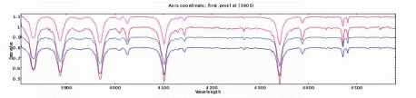
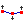

The anatomy of a plot window is shown below:
It has three main regions, the menubar & toolbar, the control panel and
the display area.
The display area
The display area shows a view of all the spectra that are currently associated with this plot. The colours, plotting style etc. of these spectra are determined by their global properties as set in the main browser window.The plot title and axis labels are determined using the properties of the current spectrum, if possible. For instance if the current spectrum is an NDF then these values are determined from the NDF's title, units and axis components, or for more recent NDFs from the properties of its WCS component. Similarly for FITS files these values are determined using the world coordinates FITS keywords. To change these look in the Configure Plot Options window, which is activated by pressing the
button.
The size of the area used to display a spectrum is initially determined from an automatic match of its data and coordinate extents to the visible surface of the display area, you can change the size of the display surface using the zoom controls described below and/or you can change the actual data limits using the Configure Plot Options window. When you add or remove a spectrum the apparent size of the display region stays the same and all the spectra now displayed are scaled to fit within it. To return to a state where the visible surface matches the display area you need to press the
and
buttons.
The Configure Plot Options window also offers the ability change the colour of the display area background, to draw the lines using anti-aliasing (which reduces the jagged effects, but at the cost of drawing speed), to modify the reserved area around the plot and do things like position the numeric labels, set the axis gaps etc.
The following interactions are provided in the display area.
- Continuous coordinate and data readout: when you move the mouse pointer over the display area the coordinates and data value of the nearest point of the current spectrum are shown in the control panel. If the readout is not updating you have probably moved outside of the extent of the current spectrum (the one selected in the Displaying: control).
If the vertical hair is enabled, then this also follows the mouse pointer.
- Region Zoom: you can zoom on a feature by dragging a rectangle over it using the middle mouse button.
- Incremental Zoom: you can increase the zoom factors by one simply by pressing the middle mouse button anywhere in the display area.
- Scrollbars: when the X or Y zooms make the plot greater in size than the display area scrollbars appear to the bottom and right. Just drag the sliders to scroll.
- Keyboard Scroll: the arrows keys can be made to control the scroll, provided the keyboard focus is in the display area. Make sure of this by clicking the left mouse button while pointed in the display area.
- Interpolated data value: if the keyboard focus is in the display area and the vertical hair is shown, then pressing the space bar will display the interpolated position of the hair, rather than the X coordinate and data value of the nearest position in the spectrum.
- Interactive graphics control: if any interactive graphics figures are shown (such as those that define ranges for fitting backgrounds and spectral lines, or are produced by the controls in the Graphics menu), then these can be moved by selecting them (just click on one and little grips appear around the edges) and then dragging them and resized by dragging the edge grips.
- Drop target: you can drop any spectra dragged from the global list and they will be displayed.
The control panel
The control panel area provides controls for interacting with the plot. It also shows details of what spectra are displayed in the plot and a continuous readout of the X coordinate and corresponding data value.The Displaying: drop down list shows the names and current rendering properties of any spectra that are displayed. If you choose a spectrum from this list it becomes the current spectrum and is used as the basis for the plot's coordinates (so the readouts now show the values of this spectrum, also the plot will be re-drawn if the coordinate system of the newly selected spectrum is different). The selected spectrum also becomes selected in the browser window (so you see its details more clearly and apply modifications). This spectrum is also the one used by any tools (such as background and line fitting) that work with only one spectrum. If you remove this spectrum using the Edit->Remove current spectrum option then the next spectrum in the list becomes the current one.
The Y limits (%): drop down list provides a series of quick cuts for setting the limits of the Y axis. Normally this is the full range, but using a percentage cut can usefully clip the range to reject extreme outlier data values.
The Wavelength: entry control has two functions. The first is to show the current wavelength. The second is to allow you to centre the display area on a specific coordinate. Just type in the value you want to see here and press <Return>. Note that the label of this area modifies to match the label of the X axis, so could say something different to Wavelength:.
The :V-hair checkbox controls whether the `vertical hair' is shown. The vertical hair is just a vertical line that follows the mouse pointer around the display area. It can be quite slow, so isn't shown by default.
The X scale: and Y scale: controls change the zoom of the display area. The plus and minus controls increase and decrease the zoom by one, or you can choose a zoom from the drop-down lists, or you can type in a decimal value (which should be greater than equal to one) and press <Return>.
The :log controls determine if either of the axes are drawing using log spacing (this is not possible if either axis spans the value zero). Finer control of the log spacing and labelling can obtained using the plot configuration window.
The Track free checkbox determines what values are shown in the continuous coordinate readouts. When unchecked (the default) the values shown are the nearest ones of the current spectrum to the pointer position. When checked the readouts show the coordinates under the pointer.
Toolbar and menus
The toolbar region has a series of buttons that act as short-cuts to most of the functions found in the main menus. Some of these create new windows with complex actions that should be consulted for further help.

- Print a copy of the display area to an installed printer or to a file. The output produced fits the output page format using the current aspect ratio of the display area, so if you're zoomed by a large factor then you'll get an output page that has a very small height. If you want a printout of just the visible part then cut it out and display it in a new plot first. Postscript output from this dialogue isn't encapsulated. The next figure is an example of this output. Note that if you're looking at a paper copy of this document you're looking at the postscript output and if you're looking at the on-line help it shows a scaled JPEG for on-line copies (see item after next).


- Same as the print option, except, this only offers to write a postscript file and doesn't rely on having any printers installed on the local machine. The output can be in encapsulated form for inclusion in other documents.

- Make a JPEG image version of the display area. Again the file produced fits the output graphic using the current aspect ratio of the display area. The default is to produce a JPEG with a pixel-to-pixel correspondence to what you see on the screen (if it were possible to view the whole of the area). Alternatively you can scale the graphic to fit some dimensions that you enter, or just clip the graphic to these dimensions. (Hint: if you want anti-aliased lines drawn in the JPEG select this plotting option first using the plot configuration window).
- Make spectra fit the display area width. Use this to quickly return to an unzoomed coordinate state and to match the X axis width when you resize the plot window.
- Make spectra fit the display area height. Use this to quickly return to an unzoomed data value state and to match the Y axis height when you resize the plot window.

- Show the `panner' window. You can use this to see a view of the whole extent of the currently displayed spectra (shown at the same aspect ratio as the display area). This also features a red rectangle that shows the extent of the display area, this can be moved to change the display area view.
- Show the plot configuration window. This contains many controls for setting the display area data limits, changing the plot title and axis labels, drawing grid lines, defining how many ticks to display, changing the amount of space around the plot edges, setting the background colour and whether to draw text or text and lines using anti-aliasing. It also offers facilities to save these settings for future restoration.

- Create a new spectrum (on the global list) that contains only the visible parts of the current spectrum. You can then display this new spectrum in this or a new plot. The new spectrum is given the name Cut <n> of <current_shortname>. This facility is useful to create printouts of just parts of a spectrum and to speed up processing of very large spectra.

- Show the region cutter window. This window allows you to graphically define which regions you'd like to cut or delete from the current spectrum.

- Show the toolbox for fitting a polynomial to defined regions of the current spectrum. This is used to define backgrounds prior to line fitting, or for subtracting and dividing backgrounds from spectra.
- 
- Show the toolbox for taking an interpolated curve (i.e. a spline drawn on the plot using the features of the Graphics menu) and creating a spectrum from it.

- Show the toolbox for fitting emission and absorption lines. This measures the line position and equivalent width as well as fitting Gaussian, Lorentzian and Voigt profiles to selected wavelength ranges of the current spectrum. Remember to define a polynomial background before using this tool or have your data processed for fitting.

- Show the toolbox for filtering the current spectrum. The filters offered are simple ones like the average and median over a windowed area, plus more complex ones like smoothing using any of the known line shapes and denoising using wavelet transformations.

- Show the toolbox for selecting new coordinates or data units for the current spectrum (and therefore plot).

- Show the toolbox for flipping, shifting or redshifting editable spectra shown in the plot. Also allows you create an editable copy of the current spectrum.

- Show the toolbox for determining statistics (mean, standard deviation, etc.) of the whole or parts of the current spectrum.
The Options menu contains several control items whose values are preserved between invocations of SPLAT-VO.
- Options->Match coordinates and/or fluxes. When this is selected the plot will attempt to convert the spectral coordinates and fluxes of all displayed spectra into the systems of the current spectrum, so that they will be aligned when displayed.
Whether this works or not depends on whether the spectra that you have read in contain correct descriptions (or descriptions that SPLAT-VO can make good guesses about) of the spectral coordinates and data fluxes and whether the flux system is supported. If this doesn't work then check that your spectra have valid descriptions using the toolboxes in the main browser window for inspecting and setting spectral coordinates and data units (
and
).
In the case of line identifier catalogues, these will also be transformed to the rest frame of the observed source (i.e. they will be red or blue shifted if you have defined the source velocity as part of its coordinate system definition).
Many spectra will not have appropriate coordinates or data units defined, so by default this option is switched off.
- Options->Match non-flux data units. If your data units are not understood as fluxes it may still be possible to align them (dimensionally obvious unit conversions are possible for instance mK and K will be aligned correctly, as will eV and keV).
- Options->Only display grid axes in visible area Normally the labelled axes displaying the spectral and data coordinates are drawn to the full size of the display surface of the plot. This is the quickest mode as it reduces the need for re-drawing. If you select this option the axes will be only drawn within the the visible part of the plot, which makes it easier to see the coordinate labels, but means that the axes need to be re-drawn continually when scrolling.
- Options->Only display spectra within axes Select this option if you only want spectra (including line identifiers) to be drawn within the bounds of the axes. When combined with the previous option to only display axes in the visible area this will potentially slow down scroll operations a lot, so the default is off.
- Options->Line identifiers->Load all matching line identifiers If you select this option then all line identifiers known to SPLAT-VO (including any that you have opened yourself), and whose coordinate ranges fall within that of the plot, will be loaded into the global list and displayed in the plot. Note that this will not work if the spectra displayed in the plot do not have defined spectral coordinates.
- Options->Line identifiers->Load all matching pre-loaded line identifiers If you select this option then all line identifiers already loaded into the global list, and whose coordinate ranges fall within that of the plot, will be displayed in the plot. Note that this will not work if the spectra displayed in the plot do not have defined spectral coordinates.
- Options->Line identifiers->Positions track current spectrum If you select this option then line identifiers that do not have data positions (this is typically true) will be positioned above the current spectrum, rather than displayed in a line along the bottom of the plot.
- Options->Line identifiers->Prefix name to labels If you select this item then the short name of each line identifier spectrum displayed in the plot will be prefixed to the label. This allows you to discriminate between crowded labels. Note that the short name of a line identifier can be modified in the main window, once it is loaded into the global list.
- Options->Line identifiers->Draw horizontal labels Select this option if you want line identifier labels drawn horizontally rather than vertically.
- Options->Error bar auto-ranging. When auto-ranging a spectrum that has associated errors the limits do not include the extent of any error bars that will be drawn, if you want this to be otherwise select this option.
- Options->Auto-fit percentiles in Y. When this option is selected choosing a percentile limit in Y results in the plot also being forced to fit the height of the plot.
- Options->Short names in menu lists. When this option is deselected the long names (usually file names) are shown in the drop-down menu.
SPLAT-VO -- A VO-enabled Spectral Analysis Tool